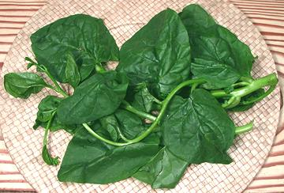

Malabar Spinach

[Ceylon / Indian / Surinam / Chinese / Vietnamese Spinach; Broad Bologi,
Poi Baagi, Calaloo, Buffalo Spinach; Mong Toi (Viet); Paag-Prung,
Phak plang yai, phalpang (Thai); Phakkang, Pak pang (Laos); Alugbati,
Dundula, Grana, Libato (Philippines); Niviti (Sri Lanka); Gendola,
Remayong, Tembayung (Malay); Genjerot, Jingga, Gendola (Indonesia);
Saan Choy (Cantonese); Shan Tsoi, Luo Kai, Shu Chieh, Lo Kwai (China);
Poi (India); Pui Shak (Bengali); Kodip PasaLi (Tamil); Tsuru Murasa Kai
(Japan); Amunututu (Yoruba); Gborongi (Igbo); Basella alba]
Not related to regular spinach but rather to cactus and purslane
(order Caryophyllales (Carnations)), this plant has a flavor
vaguely similar to spinach, but more earthy and much milder due to
low oxalic acid content. The leaves are thick, almost succulent, and
actually quite filling. One cultivar, "Rubra", has red stems.
While regular spinach is a cool temperate plant which doesn't like
the tropics at all, Malabar Spinach is a tropical vine. A fast growing
perennial, it is harvested continuously by cutting new growth. It can
be grown as an annual in warmer temperate regions.
More on Carnations.
This plant is used throughout southern India, Southeast Asia,
southern China and as far north as Japan. In India it is used in curries,
it's mucilaginous character acting as a thickener. In Southeast Asia
it is briefly cooked in stir fries and in soups. It also appears in
tropical African cuisine as a leafy green vegetable.
Buying:
Malabar Spinach is now fairly common in Asian
markets in California, and can sometimes be found at farmer's markets
if there is an Asian participant.
Storing & Growing:
This plant does
not store well in the fridge and should be used within 2 days. If you
need to keep it longer, just cut 1/2 inch off the bottom of the stems
and place it in a jar with fairly deep water. It will keep a long time,
and will start to root in less than a week. Rooted plants can be planted
and will grow vigorously with normal care. You can cut some off now and
then for cooking.
Yield:
1 pound from a typical bag yielded 13 ounces when
all stems larger than 1/4 inch were discarded, for a yield of 81%.
Cooking:
For stir fries and the like cook as for regular
spinach, in just a little oil. Free water on the leaves from washing is
sufficient to get it cooking. Stir frequently and stop cooking as soon as
the leaves are limp and of a uniform cooked color. Do not overcook or it
will become slimy and leave a metallic aftertaste.
In India Malabar Spinach is used as a thickener similar to the way okra
is, so it's cooked much longer in curries, sambars and the like, and with
a lot more other ingredients.
Nutrition:
Malabar Spinach is high in Vitamin A and C as
well as Iron and Calcium. It is low in calories but has a good protein to
calories ratio, and plenty of soluble fiber.
cn_malabarz.html 090704 - www.clovegarden.com
©Andrew Grygus - agryg@clovegarden.com - Photos on this
page not otherwise credited are © cg1 -
Linking to and non-commercial use of this page permitted